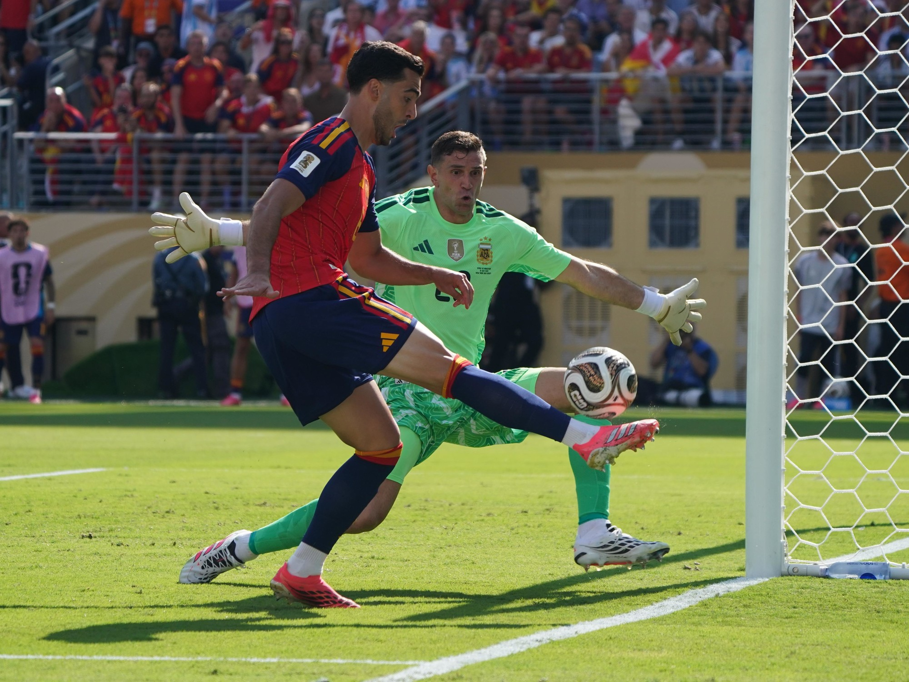
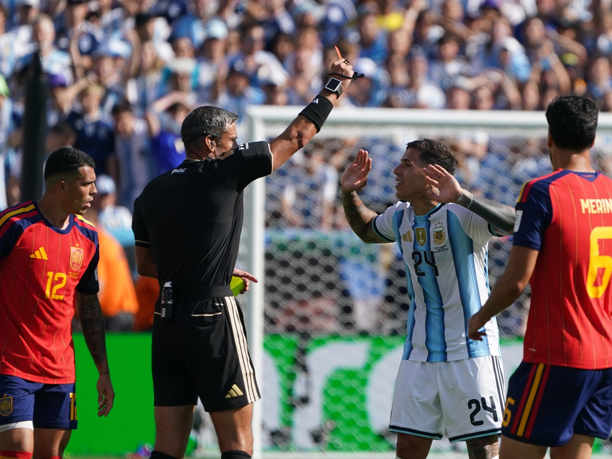

España conquista su segunda estrella: la Roja se corona campeona del mundo tras doblegar a Argentina en la prórroga

Foto: FIFA World Cup 26La selección de Luis de la Fuente venció este domingo a Argentina por 1-0 en la prórroga, con un gol de Ferran Torres en el minuto 105, y se proclamó campeona de la Copa del Mundo 2026 en el MetLife Stadium de Nueva Jersey. Es el segundo título mundial de la historia de La Roja, dieciséis años después de Sudáfrica 2010, en una final histórica entre dos selecciones hispanohablantes.
Ficha del partido
Competición: Final de la Copa Mundial de la FIFA 2026.
Resultado: España 1 - 0 Argentina (tras prórroga).
Fecha: domingo 19 de julio de 2026.
Estadio: MetLife Stadium (Estadio Nueva York Nueva Jersey durante el torneo), East Rutherford, Nueva Jersey.
Asistencia: en torno a 80.000 espectadores, sobre un aforo de 82.500.
Árbitro: Slavko Vinčić (Eslovenia).
Gol: Ferran Torres, min. 105 (España), asistencia de Nico Williams tras centro de Pedro Porro.
Goles anulados: Nico Williams (min. 97, falta previa señalada a Mikel Merino) y Ferran Torres (min. 112, fuera de juego).
Amarillas: Alexis Mac Allister (Argentina, min. 112).
Rojas: Enzo Fernández (doble amarilla, min. 90+3) y Thiago Almada (tras el pitido final), ambos de Argentina.
Alineaciones
España (Luis de la Fuente): Unai Simón; Pedro Porro, Pau Cubarsí, Aymeric Laporte, Marc Cucurella; Rodri, Fabián Ruiz; Álex Baena, Dani Olmo, Lamine Yamal; Mikel Oyarzabal. Cambios: Ferran Torres, Nico Williams y Mikel Merino en la segunda mitad y la prórroga; Martín Zubimendi por Rodri (min. 99) y Eric García por Laporte ya en la prórroga.
Argentina (Lionel Scaloni): Emiliano "Dibu" Martínez; Gonzalo Montiel, Cristian Romero, Lisandro Martínez, Nicolás Tagliafico; Rodrigo De Paul, Enzo Fernández, Alexis Mac Allister; Nicolás González, Lionel Messi, Julián Álvarez. Cambios: Marcos Senesi, Giuliano Simeone y Nicolás Otamendi entraron durante la prórroga.
Un partido bloqueado que se resolvió en el tiempo extra
El choque, arbitrado por el esloveno Slavko Vinčić, llegó al descanso con el marcador a cero tras un primer tiempo de máxima tensión y pocas ocasiones claras. En ese primer acto, Lionel Messi sufrió un susto al torcerse el tobillo derecho intentando un centro desde la línea de fondo, aunque pudo continuar.
 Foto: FIFA World Cup 26
Foto: FIFA World Cup 26
El guion apenas cambió en la segunda parte. España impuso su fútbol de posesión y generó ocasiones, pero se topó con un muro defensivo argentino y con la falta de acierto en el último pase. Los 90 minutos se agotaron sin goles y, ya en el descuento, Enzo Fernández vio la roja, dejando a la Albiceleste con diez para la prórroga.
El tiempo extra confirmó el dominio total de una España que terminó el partido con 20 remates por ninguno de Argentina a puerta.
El gol anulado a Nico Williams y la polémica arbitral
La primera gran polémica del alargue llegó en el minuto 97. Nico Williams cazó un balón suelto dentro del área y batió a Emiliano Martínez, pero Vinčić anuló la acción por una supuesta falta previa de Mikel Merino sobre Otamendi, un pisotón que, según numerosos analistas, ni impidió al central disputar el balón ni tuvo intencionalidad manifiesta. El VAR no llamó al árbitro a revisar la jugada, lo que multiplicó la indignación en el banquillo español.
España, lejos de venirse abajo, insistió en su dominio y encontró la recompensa poco después: en el minuto 105, Ferran Torres remató a la red un centro de Pedro Porro en una jugada iniciada por el propio Nico Williams, que se resarció de la anulación firmando la asistencia del gol que valía un Mundial. Ya en el segundo periodo de la prórroga, en el 112, Ferran Torres vio anulado un segundo tanto por fuera de juego, aunque el resultado ya no se movió del 1-0.
En los minutos finales, con España resistiendo el empuje desesperado de Argentina, el propio Messi sirvió un balón que Marcos Senesi remató fuera por poco, y Giuliano Simeone perdonó una ocasión clarísima por encima del larguero. Cuando el colegiado señaló el final en el 120+5, España ya era, matemáticamente, campeona del mundo.
Dureza en el campo y una tangana que empañó la fiesta
El choque dejó, además del resultado, un poso de tensión que Argentina no supo digerir. Sobre el césped, la Albiceleste acumuló faltas y acciones de dureza durante buena parte del partido, con Enzo Fernández viendo la segunda amarilla en el descuento del tiempo reglamentario y Thiago Almada, que había entrado en la segunda mitad, protagonizando varias entradas fuertes.

Foto: FIFA World Cup 26Lo más lamentable llegó tras el pitido final. En pleno estallido de alegría española, Rodri se cruzó con Nahuel Molina, que realizó un gesto hacia el centrocampista del Manchester City y desató una tangana entre jugadores de ambos equipos. La tensión fue a más cuando Leandro Paredes agarró por el cuello a Eric García en medio del tumulto, mientras Gavi, que había acudido en defensa de su compañero de Barcelona, terminó en el suelo rodeado de futbolistas argentinos. El propio Lionel Scaloni tuvo que intervenir para calmar los ánimos, y Thiago Almada acabó viendo la roja por su implicación en la trifulca.
La falta de deportividad argentina no se quedó en el terreno de juego. Mientras España iniciaba el protocolo de entrega de medallas y trofeo, buena parte de la expedición albiceleste dio la espalda a la ceremonia y se dirigió hacia uno de los fondos del estadio para saludar a su afición, sin permanecer sobre el césped para presenciar la coronación de los campeones, un gesto que generó notable polémica en las horas posteriores a la final.
Rodri levanta la Copa en Nueva Jersey
El capitán Rodri Hernández, elegido Balón de Oro del torneo como mejor jugador de la Copa del Mundo, recibió el trofeo de manos del presidente de la FIFA, Gianni Infantino, y del presidente de Estados Unidos, Donald Trump, en la ceremonia celebrada sobre el césped del MetLife Stadium. Junto a Rodri, Unai Simón fue distinguido con el Guante de Oro al mejor portero, Pau Cubarsí como mejor jugador joven, y el francés Kylian Mbappé se llevó la Bota de Oro como máximo goleador de la cita mundialista.
Para Argentina, la final supuso el epílogo de la carrera de Lionel Messi con la Albiceleste en una Copa del Mundo, un adiós marcado por la derrota ante el eterno rival continental.
"Son un ejemplo para España"
Un emocionado Luis de la Fuente valoró así el título nada más finalizar el encuentro: "Siento mucho orgullo por esta generación de futbolistas, que ha ido creciendo con esta idea de grupo, de equipo y de familia. Para mí es un honor absoluto". Con lágrimas en los ojos, el seleccionador riojano añadió: "Son un ejemplo para España: juntos somos más fuertes".
El autor del gol, Ferran Torres, no ocultó su emoción: "Este gol ha sido de 47 millones de personas y de los 26 jugadores. El destino estaba escrito para que ganásemos lejos de casa y queríamos que estuviesen orgullosos". El delantero, muy criticado en los meses previos al torneo, añadió: "Esto es una liberación enorme; he sido muy criticado, pero Dios siempre me da la fuerza que necesito".
Desde España, la Casa Real felicitó a la selección a través de un comunicado: "¡Campeones del mundo! Esta estrella es el premio a un camino tan largo como exigente, recorrido con esfuerzo, sacrificio, constancia y una entrega ejemplar en cada partido". El Comité Olímpico Español también se sumó a las felicitaciones, destacando que España "vuelve a situarse en la cima del mundo 16 años después".
La fiesta se traslada a Madrid
La selección campeona del mundo aterrizará este lunes en Madrid procedente de Estados Unidos. Por la tarde, los jugadores visitarán al Rey Felipe VI y al presidente del Gobierno, Pedro Sánchez, antes de iniciar el tradicional desfile de celebración. El recorrido, en autobús descapotable, arrancará sobre las 20:00 horas desde Moncloa, continuará por la Calle Princesa y la Calle Alberto Aguilera, pasará por la Plaza de Colón y culminará, como manda la tradición, en la Plaza de Cibeles, donde miles de aficionados esperan ya para recibir a los nuevos campeones del mundo.